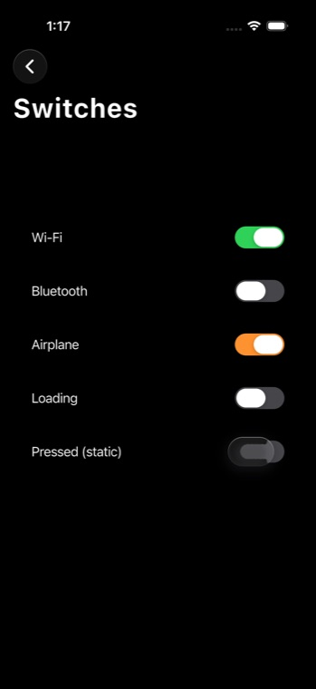
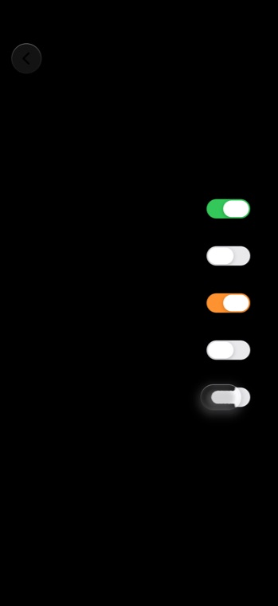

Каталог / Формы и контролы
GlassSwitch
Переключатель iOS 26: при нажатии ползунок превращается в стеклянную пилюлю.
Как выглядит




Что это
Измерен на нативном Toggle: 63×28 pt дорожка, 37×24 pt ползунок. Тащится пальцем, при удержании — чистое стекло; зелёный как в системе (#30D158 в тёмной теме).
GlassSwitch(value: on, onChanged: (v) => setState(() => on = v))
// c запросом: пока Future выполняется, в ползунке спиннер, переключатель заблокирован
GlassSwitch(value: on, onChangedAsync: (next) async { await api.save(next); setState(() => on = next); })Параметры (из dartdoc)
GlassSwitch
| Параметр | Тип | По умолчанию | Описание |
|---|---|---|---|
value | bool | required | |
onChanged | ValueChanged<bool>? | required | |
onChangedAsync | Future<void> Function(bool next)? | Like onChanged, but the request is awaited: while the returned future runs the switch shows the spinner in its thumb and is locked (cannot be pressed, dragged or toggled). Update value from the callback once the request has gone through; if it throws or… | |
activeColor | Color? | Track color when on. Default: iOS green, in the system's dark variant (#30D158, measured on a native dark Toggle) when the theme is dark and #34C759 otherwise. | |
trackColor | Color? | Track color when off; default follows the theme. | |
width | double | 63 | |
height | double | 28 | |
loading | bool | false | Shows the pressed look permanently (for tuning the glass). Shows an activity indicator inside the white thumb (a request is in flight) and locks the switch: it cannot be pressed, dragged or toggled until loading is false again. |
debugPressed | bool | false |
Импорт: import 'package:swiftuikit/swiftuikit.dart';